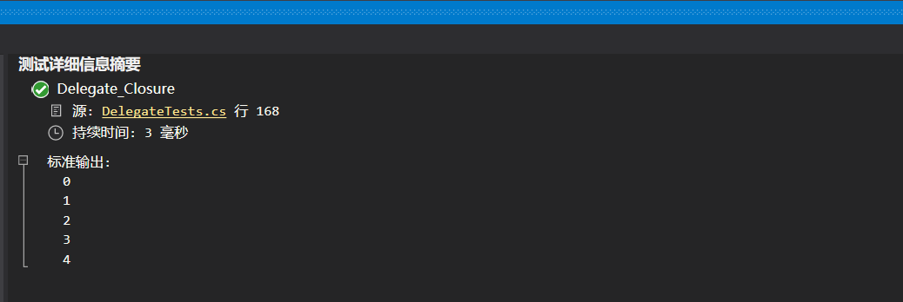

委托是一个类，它定义了方法的类型，指明了这个委托类型的变量可接受的函数，表示对具有特定参数列表和返回类型的方法的引用，使得可以将方法当作另一个方法的参数来进行传递
不管什么函数只要返回值类型和参数能匹配委托所指定的，那么这个函数就能存储为一个委托变量的引用。
为什么需要委托
委托可以将方法作为参数
逻辑解耦，保持稳定
代码复用，保证项目规范
委托使用步骤
使用 delegate 关键字定义委托
声明委托对应的方法
实例化委托将方法作为参数传入
1 2 3 4 5 6 7 8 9 10 11 12 13 14 15 16 17 18 19 class DelegateTest { public delegate int Sum (int x， int y static void Main (string [] args { Sum sum = new Sum(new DelegateTest().Add); int result = sum.Invoke(1 ， 2 ); Console.WriteLine(result); Console.ReadKey(); } public int Add (int x， int y { return x + y; } }
step01 ：使用 delegate 关键字定义委托step02 ：声明委托对应的方法step03 ：实例化委托将方法作为参数传入
至此，一个委托就完成了。
匿名方法
上面说到完成一个委托要分三步走缺一步都不行，但是微软可能感觉这么实现比较麻烦，非要把三步做成两步来走！所以就用匿名方法来简化上边的三个步骤。
1 2 3 4 5 6 7 8 9 10 11 public delegate int Sum (int x， int ystatic void Main (string [] args{ Sum sum = delegate (int x， int y) { return x + y; }; int result = sum.Invoke(1 ， 2 ); Console.WriteLine(result); Console.ReadKey(); }
step01 ：使用 delegate 关键字定义委托step02 ：使用匿名方法的写法把一个方法赋值给委托
这时会发现这里省略了定义方法这一步，将三步简化成了两步。
Lambda表达式
微软对C#的设计理念是简单易用。这时候发现对匿名方法的方式依旧不太满意，就想方设法的来简化 delegate(int x， int y) { return x + y; } 这个匿名方法，Lambda 就出现了。
lambda 运算符 => 左边列出了需要的参数，右边定义了赋予 lambda 变量的方法实现代码。
1 2 3 4 5 6 7 8 9 10 11 12 13 14 15 16 17 public delegate int Sum (int x， int ystatic void Main (string [] args{ Sum sum1 = (int x， int y) => { return x + y; }; int result1 = sum1(1 ， 2 ); Sum sum2 = (x， y) => { return x + y; }; int result2 = sum2(1 ， 2 ); Sum sum3 = (x， y) => x + y; int result3 = sum3(1 ， 2 ); }
方法一 ：简单的把 delegate 去掉，在 () 与 {} 之间加上 =>方法二 ：在方法一的基础上把参数类型都干掉了方法三 ：要干就干彻底些，把 {} 以及 return 关键字都去掉了
注意：这三种方法随便怎么写都行
Lambda表达式简写
如果 lambda 表达式只有一句，方法块内就可以省略花括号和 return 语句，这时编译器会添加一条隐式的 return 语句。
1 Func<double ， double > func = param => param * param;
等价于
1 2 3 4 Func<double ， double > func = param => { return param * 2 ; };
泛型委托
随着.Net版本的不断升级，微软又来玩新花样了，不管是匿名方法还是 Lambda 表达式，完成一个委托的应用，都逃不过两个步骤，一步是定义一个委托，另一步是用一个方法来实例化一个委托。微软干脆把这两步都合成一步来走了。用 Func 来简化一个委托的定义。
1 2 3 4 5 6 7 8 9 10 11 12 13 14 static void Main (string [] args{ Func<int , int , int > add1 = (int x, int y) => { return x + y; }; int result1 = add1(1 ， 2 ); Func<int , int , int > add2 = (x， y) => { return x + y; }; int result2 = add2(1 ， 2 ); Func<int ， int ， int > add3 = (x， y) => x + y; int result3 = add3(1 ， 2 ); }
至此一个委托的应用就可用 Func<int， int， int> add3 = (x， y) => x + y; 一句话来完成了，其中的 Func 就是所谓的泛型委托。
微软提供了 Action<T> 和 Func<T> 两种泛型委托，用于简化方法定义。
Action
表示引用一个 void 返回类型的方法，可以传递最多16种不同的参数类型 ，没有泛型参数的 Action 类可调用没有参数的方法。
1 2 3 4 5 6 7 8 9 Action action1 = () => { Console.WriteLine("啦啦啦啦" ); }; action1(); Action<string > action2 = p => { Console.WriteLine("啦啦啦啦，name:{0}" ,p); }; action2("wang" ); Action<string , int > action3 = (name,age) => { Console.WriteLine("啦，name:{0}，age:{1}" , name,age); }; action3("wang" ,25 );
Func
Func<T> 允许调用带返回类型的方法，可以传递**16种不同类型的参数和一个返回类型**，Func<out TResult> 委托类型可以调用带返回值且无参数的方法。
总结
Action<T> 用于没有返回值的方法（参数根据自己情况进行传递）Func<T> 用于有返回值的方法（参数根据自己情况传递）
记住无返回就用 Action<T>，有返回就用 Func<T>
表达式树
表达式树其实与委托已经没什么关系了，如果非要扯上关系，表达式树是存放委托的容器。如果非要说的更专业一些，表达式树是存取 Lambda 表达式的一种数据结构。要用 Lambda 表达式的时候，直接从表达式中获取出来 Compile() 就可以直接用了。
1 2 3 4 5 6 static void Main (string [] args{ Expression<Func<int , int , int >> exp = (x, y) => x + y; Func<int , int , int > fun = exp.Compile(); int result = fun(1 , 2 ); }
Invoke
1 2 3 4 Sum sum = delegate (int x, int y) { return x + y; }; int result = sum.Invoke(1 , 2 );int result = sum(1 ,2 );
委托数组
定义 Math 类提供两个静态方法接收一个 double 类型的参数，用于计算倍数和阶乘。
1 2 3 4 5 6 7 8 9 10 11 class Math { public static double MultipleTwo (double value { return value * 2 ; } public static double Square (double value { return value * value ; } }
添加MathOperation操作方法，传递委托和double类型参数
1 2 3 4 5 6 7 8 9 10 11 12 13 14 15 16 17 18 19 20 21 22 23 24 class Program { public delegate double MyDelegate (double value static void Main (string [] args { MyDelegate[] myDelegates = { Math.MultipleTwo， Math.Square }; for (int i = 0 ; i < myDelegates.Length; i++) { MathOperation(myDelegates[i]， 3.7 ); MathOperation(myDelegates[i]， 3.0 ); } Console.ReadKey(); } public static void MathOperation (MyDelegate myDelegate， double value ) { var result = myDelegate(value ); Console.WriteLine("Delegate is {0}，value is {1}" ， myDelegate，result); } }
多播委托
之前的每个委托都只包含一个方法调用，调用委托的次数与调用方法的次数相同，如果要调用多个方法，就需要多次显式调用这个委托。
但委托中也可以包含多个方法，称为多播委托。多播委托可以按顺序调用多个方法，为此委托的签名必须返回void，否则就只能得到委托最后调用的最后一个方法的结果。
1 2 3 4 5 6 7 8 9 10 Func<double , double > func = Math.MultipleTwo; func += Math.Square; var result = func(3.0 );Console.WriteLine(result); MyDelegate myDelegate = Math.MultipleTwo; myDelegate += Math.Square; var result2 = myDelegate(3.0 );Console.WriteLine(result2); Console.ReadKey();
只返回了3.0阶乘的值
+= 和 -=
多播委托使用 += 和 -=，在委托中增加或删除方法调用。
1 2 3 4 5 6 7 8 9 10 11 12 13 14 15 16 17 18 19 20 21 22 23 static void Main (string [] args{ Action action = Print.First; action += Print.Second; action(); Action action2 = Print.First; action2 += Print.Second; action2 -= Print.First; action2(); Console.ReadKey(); } class Print { public static void First ( { Console.WriteLine("FirstMethod" ); } public static void Second ( { Console.WriteLine("SecondMethod" ); } }
如果要使用多播委托，就要知道对同一个委托调用方法链的顺序并未正式定义，因此要避免编写依赖于特定顺序调用方法的代码。
多播委托异常处理
使用多播委托，意味着多播委托里包含一个逐个调用的委托集合，如果集合其中一个方法抛出异常.整个迭代就会停止。
1 2 3 4 5 6 7 8 9 10 11 12 13 14 15 16 17 18 19 20 21 22 23 24 class Program { public delegate double MyDelegate (out double value static void Main (string [] args { Action action = Print.First; action += Print.Second; action(); Console.ReadKey(); } } class Print { public static void First ( { Console.WriteLine("FirstMethod" ); throw new Exception("Error" ); } public static void Second ( { Console.WriteLine("SecondMethod" ); } }
委托只调用了第一个方法，因为第一个方法抛出了异常，委托的迭代停止，不再调用 Second()
GetInvocationList
使用 Delegate的GetInvocationList() 方法自己迭代方法列表。
1 2 3 4 5 6 7 8 9 10 11 12 13 14 15 16 Action action = Print.First; action += Print.Second; Delegate[] delegates = action.GetInvocationList(); foreach (Action item in delegates){ try { item(); } catch (Exception error) { Console.WriteLine(error.Message); } } Console.ReadKey();
修改后，程序在捕获异常后，会迭代下一个方法。
闭包的陷阱
https://www.cnblogs.com/aehyok/p/3730417.html
源码：
1 2 3 4 5 6 7 8 9 10 List<Action> list = new List<Action>(); for (int i = 0 ; i < 5 ; i++){ Action t = () => Console.WriteLine(i.ToString()); list.Add(t); } foreach (Action t in list){ t(); }
IL反编译
1 2 3 4 5 6 7 8 9 10 11 List<Action> list = new List<Action>(); TempClass tempClass = new TempClass(); for (tempClass.i = 0 ; tempClass.i < 5 ; tempClass.i++){ Action t = tempClass.TempFunc; list.Add(t); } foreach (Action t in list){ t(); }
1 2 3 4 5 6 7 8 public class TempClass { public int i; public void TempFunc ( { Console.WriteLine(i.ToString()); } }
所谓的闭包对象，指的是上面这种情形中的 TempClass 对象。如果匿名方法（Lambda表达式）引用了某个局部变量，编译器就会自动将该引用提升到该闭包对象中。即将for循环中的变量 i 修改成了引用闭包对象的公共变量 i。这样一来，即使代码执行后离开了原局部变量 i 的作用域(如for循环)，包含该闭包对象的作用域也还存在。
1 2 3 4 5 6 7 8 9 10 11 List<Action> list = new List<Action>(); for (int i = 0 ; i < 5 ; i++){ int temp = i; Action t = () => Console.WriteLine(temp.ToString()); list.Add(t); } foreach (Action t in list){ t(); }

事件
事件是一种引用类型 ，实际上也是一种特殊的委托。事件基于委托，是提供了发布/订阅机制的委托，事件是将委托封装，并对外公布了订阅和取消订阅的接口。
Example_01
不使用委托和事件的代码，耦合度高
1 2 3 4 5 6 7 8 9 10 11 12 13 14 15 16 17 18 19 20 21 22 23 24 25 26 27 28 29 public class Player { public void Die ( { GameConfiguration configuration = new GameConfiguration(); configuration.OnPlayerDeath(); UI ui = new UI(); ui.OnPlayerDeath(); } } public class UI { public void OnPlayerDeath ( { Console.Write("GameOver" ); } } public class GameConfiguration { public int DeathNumber { get ; set ; } public void OnPlayerDeath ( { DeathNumber++; Console.WriteLine(DeathNumber); } }
1 2 3 4 5 6 7 [TestMethod ] public void Example_01 ({ Player player = new Player(); player.Die(); Assert.IsTrue(true ); }
Example_02
使用委托和事件解耦代码
1 2 3 4 5 6 7 8 9 10 11 12 13 14 15 16 17 18 19 20 21 22 23 24 25 26 27 28 29 30 31 32 33 34 35 36 37 38 39 40 41 42 43 44 45 46 47 48 49 50 51 52 53 54 55 56 public class Heater { private int temperature; public delegate void BoilHandler (int param public event BoilHandler BoilEvent; public void BoilWater ( { for (int i = 0 ; i <= 100 ; i++) { temperature = i; if (temperature > 95 ) { BoilEvent?.Invoke(temperature); } } } } public class Alarm { public void Alert (int param { Console.WriteLine("Alarm：dddddddd，水已经 {0} 度了：" ， param); } } public static class Display { public static void ShowMsg (int param { Console.WriteLine("Display：水已烧开，当前温度：{0}度." ， param); } }
1 2 3 4 5 6 7 8 9 10 11 12 13 14 [TestMethod ] public void Example_02 ({ Heater heater = new Heater(); Alarm alarm = new Alarm(); heater.BoilEvent += alarm.Alert; heater.BoilEvent += Display.ShowMsg; heater.BoilWater(); Assert.IsTrue(true ); }
Example_03
委托类型的名称都应该以EventHandler 结束
委托的原型定义：有一个 void 返回值，并接受两个输入参数：一个 Object 类型，一个 EventArgs 类型(或继承自EventArgs)
事件的命名为委托去掉 EventHandler 之后剩余的部分.
继承自 EventArgs 的类型应该以 EventArgs 结尾
委托声明原型中的 Object 类型的参数代表了Subject，也就是监视对象，在本例中是 Heater(热水器).回调函数(比如Alarm的Alert)可以通过它访问触发事件的对象(Heater)，EventArgs 对象包含了Observer所感兴趣的数据，在本例中是temperature。
1 2 3 4 5 6 7 8 9 10 11 12 13 14 15 16 17 18 19 20 21 22 23 24 25 26 27 28 29 30 31 32 33 34 35 36 37 38 39 40 41 42 43 44 45 46 47 48 49 50 51 52 53 54 55 56 57 58 59 60 61 62 63 64 65 66 67 68 69 70 71 72 73 74 75 76 77 78 79 80 81 82 83 public class Heater { private int temperature; public string type = "01" ; public string area = "China" ; public delegate void BoiledEventHandler (object sender， BoiledEventArgs e public event BoiledEventHandler Boiled; public class BoiledEventArgs : EventArgs { public readonly int temperature; public BoiledEventArgs (int temperature { this .temperature = temperature; } } protected virtual void OnBoiled (BoiledEventArgs e ) { Boiled?.Invoke(this ， e); } public void BoilWater ( { for (int i = 0 ; i <= 100 ; i++) { temperature = i; if (temperature > 95 ) { BoiledEventArgs e = new BoiledEventArgs(temperature); OnBoiled(e); } } } } public class Alarm { public void MakeAlert (object sender， Heater.BoiledEventArgs e { Heater heater = (Heater)sender; Console.WriteLine("Alarm：{0} - {1}: " ， heater.area， heater.type); Console.WriteLine("Alarm: 嘀嘀嘀，水已经 {0} 度了：" ， e.temperature); Console.WriteLine(); } } public static class Display { public static void ShowMsg (object sender， Heater.BoiledEventArgs e { Heater heater = (Heater)sender; Console.WriteLine("Display：{0} - {1}: " ， heater.area， heater.type); Console.WriteLine("Display：水快烧开了，当前温度：{0}度." ， e.temperature); Console.WriteLine(); } }
1 2 3 4 5 6 7 8 9 10 11 12 [TestMethod ] public void Example_03 ({ Heater heater = new Heater(); Alarm alarm = new Alarm(); heater.Boiled += alarm.MakeAlert; heater.Boiled += Display.ShowMsg; heater.BoilWater(); Assert.IsTrue(true ); }
参考
https://www.cnblogs.com/jujusharp/archive/2011/08/04/2127999.html https://www.cnblogs.com/HQFZ/p/4903400.html https://www.cnblogs.com/wangjiming/p/8300103.html